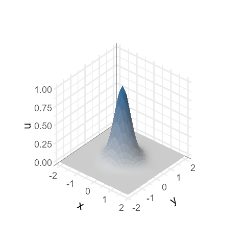
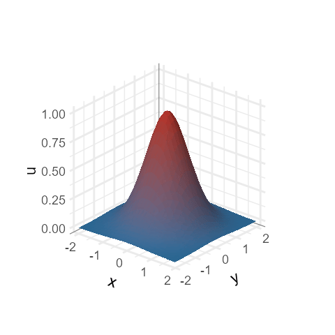
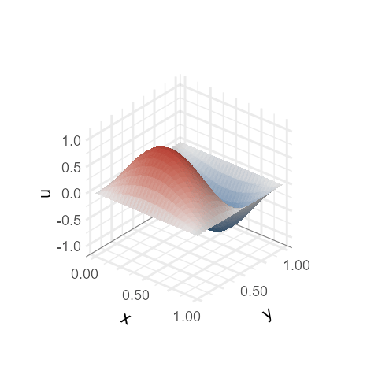
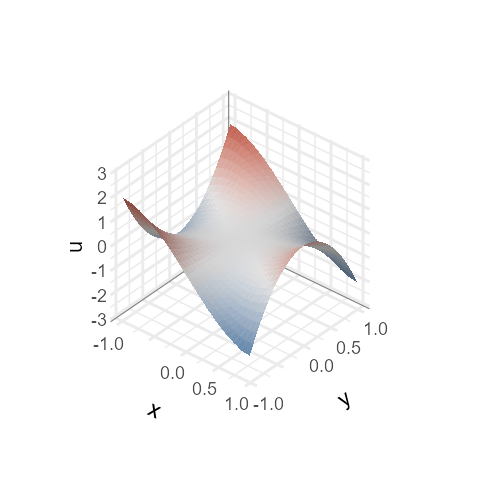

The transport, heat, wave and Laplace equations are the four linear
partial differential equations (PDEs) with explicit solution formulas
that Evans (2010) treats first. This article evaluates each formula on a
grid of positions and times, draws the solution as a surface, and
renders one frame per time with animate_3d(). Each section
ends on an animated GIF. Installation is covered in Get started; the GIF files need gifski.
Tabulate the solution in a data frame with one row per position and time.
Draw one surface per time with
geom_surface_3d().Animate the frames with
animate_3d(time = "t").
Example
library(ggplot2)
library(ggplot3d)
theme_set(theme_minimal(base_size = 17) + theme(
plot.background = element_rect(fill = "transparent", colour = NA),
panel.background = element_rect(fill = "transparent", colour = NA),
legend.position = "none"))Every solution below is a function u(x, y, t) of two
space coordinates and time. solution_frames() evaluates it
on a square grid of n by n positions at each
time in times, and returns one row per position and time
with columns x, y, t and
u.
solution_frames <- function(u, times, range = c(-2, 2), n = 31) {
grid <- expand.grid(x = seq(range[1], range[2], length.out = n),
y = seq(range[1], range[2], length.out = n),
t = times)
grid$u <- u(grid$x, grid$y, grid$t)
grid
}animate_3d(time = "t") draws the rows of one value of
t per frame, in increasing order. The scales are trained on
all frames, so the z axis and the fill colours keep the same range
throughout, and a decaying solution is seen to decay.
animate() below renders a plot at 480 by 480 pixels, writes
the GIF next to the article’s figures and returns its path for
knitr::include_graphics().
animate <- function(plot, fps = 12, ...) {
path <- knitr::fig_path(".gif")
dir.create(dirname(path), recursive = TRUE, showWarnings = FALSE)
animate_3d(plot, time = "t", fps = fps, file = path, width = 480,
height = 480, progress = FALSE, ...)
path
}Transport equation
The transport equation moves an initial profile at constant velocity without changing its shape:
The profile here is a bump that is periodic in both coordinates with period 4, , moved along the diagonal . After it is back at its start, so the 32 frames from to loop without a jump.
transport <- function(x, y, t) {
exp(3 * (cos(pi * (x - t) / 2) - 1) + 3 * (cos(pi * (y - t) / 2) - 1))
}
moving <- solution_frames(transport, times = seq(0, 4, length.out = 33)[-33])
p <- ggplot(moving, aes(x, y, z = u, fill = after_stat(z_mean))) +
geom_surface_3d(colour = NA) +
scale_fill_gradient(low = "grey85", high = PAL[["blue"]]) +
coord_3d(azimuth = -50, elevation = 35) +
labs(z = "u")
knitr::include_graphics(animate(p))
Heat equation
The heat equation spreads an initial temperature by diffusion. With unit diffusivity and the Gaussian on the whole plane, the solution stays Gaussian; its width grows and its peak falls:
The peak value falls from 1 at to 0.2 at , while the integral of over the plane stays at .
heat <- function(x, y, t) exp(-(x^2 + y^2) / (1 + 4 * t)) / (1 + 4 * t)
cooling <- solution_frames(heat, times = seq(0, 1, length.out = 25))
p <- ggplot(cooling, aes(x, y, z = u, fill = after_stat(z_mean))) +
geom_surface_3d(colour = NA) +
scale_fill_gradient(low = PAL[["blue"]], high = PAL[["red"]]) +
coord_3d(azimuth = -50, elevation = 25) +
labs(z = "u")
knitr::include_graphics(animate(p))
Wave equation
The wave equation describes a membrane fixed along its edges. On the unit square, each product vibrates at angular frequency . The modes and share the frequency ; adding them a quarter period apart gives a pattern that turns round the centre:
The solution repeats after one period , so 30 frames over loop.
omega <- sqrt(5) * pi
wave <- function(x, y, t) {
sin(pi * x) * sin(2 * pi * y) * cos(omega * t) +
sin(2 * pi * x) * sin(pi * y) * sin(omega * t)
}
period <- 2 * pi / omega
membrane <- solution_frames(wave, times = seq(0, period, length.out = 31)[-31],
range = c(0, 1))
p <- ggplot(membrane, aes(x, y, z = u, fill = after_stat(z_mean))) +
geom_surface_3d(colour = NA) +
scale_fill_gradient2(low = PAL[["blue"]], mid = "grey90", high = PAL[["red"]]) +
coord_3d(azimuth = -50, elevation = 30) +
labs(z = "u")
knitr::include_graphics(animate(p))
Laplace equation
A solution of the Laplace equation is the steady state of the heat
equation: it has no time derivative, and its values inside a region are
fixed by its values on the boundary. The real part of any polynomial in
solves it. The frames below take
in polar coordinates
,
and use the phase
as the frame variable t: every frame is an exact harmonic
function, with boundary values that rotate as
grows. Raising
by
turns the saddle by a third of a turn, which maps it onto itself, so 36
frames over
loop.
laplace <- function(x, y, t) Re(exp(-1i * t) * complex(real = x, imaginary = y)^3)
saddle <- solution_frames(laplace, times = seq(0, 2 * pi, length.out = 37)[-37],
range = c(-1, 1))
p <- ggplot(saddle, aes(x, y, z = u, fill = after_stat(z_mean))) +
geom_surface_3d(colour = NA) +
scale_fill_gradient2(low = PAL[["blue"]], mid = "grey90", high = PAL[["red"]]) +
coord_3d(azimuth = -50, elevation = 35) +
labs(z = "u")
knitr::include_graphics(animate(p))
Where next
Camera animation and interaction: camera paths, MP4 output and the interactive viewer.
Layers: the layers used here and their aesthetics.